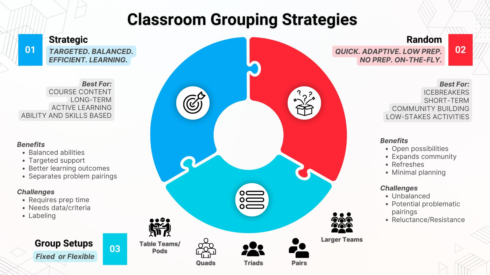

Grouping README

Strategic Grouping
TARGETED. BALANCED. EFFICIENT. MORE CONTROL.
Best For:
- Learning Content ← most recommended method
- Long-term grouping by quarter, month, week, or for continuous activities/projects
- Supports high-stakes learning
- Activities requiring specific skill levels
Benefits
- Balanced Skills: Ensures each group has the needed expertise.
- Targeted Support: Pairs strong students with those needing assistance.
- Better Learning Outcomes: Supports both high and low-achieving students.
- Behavior Management: Separates problematic pairings.
Challenges
- Time-consuming: Requires more thinking and time to build effective groups.
- Data or Criteria: Strategy requires the identification and collection of needed data or criteria.
- Labeling: Students may be able to infer or figure out how they are grouped.
Build strategic groups from your class data in a few clicks with Grouping Studio.
Random Grouping
QUICK. ADAPTIVE. LOW PREP, NO PREP, ON-THE-FLY.
Best For:
- Icebreakers and community-building activities
- Low-stakes collaborative tasks
- Short-term or one-off assignments
Benefits
- Equity: Everyone has an equal chance to work with anyone else.
- Community Building: Breaks up cliques, expands peer connections.
- Engagement: Keeps groupings fresh and unpredictable.
- Collaboration Skills: Teaches adaptability in working with diverse peers.
- Easy: Quick to set up with minimal planning.
Challenges
- Imbalanced: Groups may end up with all high or all low-performing students.
- Behavior: Could lead to higher levels or more frequent problematic interactions.
- Frustration & Resistance: Some students dislike working with unfamiliar or perceived difficult peers.
- Time Lost to Adjustment: Students may take longer to settle into productive work.
Make random groups of any size in one click with SELECTr PLUS.
Blended Approach – Use Both Methods!
Consider rotating between methods frequently throughout the year to give students both the comfort of known peers and the challenge of new collaborations.
- Flexibility: Choose a grouping method based on the activity's purpose.
- Variety: Prevents stagnation and allows both skill growth and community building.
- Balanced Outcomes: Combines equity with strategic planning.
Types of Grouping Setups
These can be FIXED or FLEXIBLE. Table Teams/Pods work great as fixed groups that are tied to the seating chart. The other types can work that way, but also function great to incorporate movement and change of pace. For example, students might be in teams of 4 as a table team, but the teacher could have all the "1's" in the group meet to create a temporary mobile quad.
Table Teams/Pods
3–5 members
Groups of more than 5 tend to be less productive. In my opinion, 4 in a group is the sweet spot.
- Flexible, embedded face/shoulder pairings, structured
- Best for strategic grouping
Quads/Triads
3–4 members
Same description as above, except not fixed to the seating arrangement.
- Supports strategic or random
Pairs
2 members
Flexible, focused. Fewer distractions. Good for peer teaching/review.
Larger Teams
6 or more members
Good for rotations, larger projects, games/competitions.
- Complex activities such as Socratic discussions, debates, mock trials, simulations, dramas/acting
Building Strategic Groups
1. Academic Ability
Assessment data – Use assessment data such as a pre-test, diagnostic, summative, benchmark, grades, etc. to form small groups.
- Mixed ability groups (heterogeneous) = balance the group with one of each ability level, i.e. high, medium-high, medium-low, and low.
- Similar ability groups (homogeneous) = a differentiation
Grades – Use grades as the data. Good for supporting ability with work ethic.
2. Personality
Personality – Grouping students based on personality type can help facilitate productive groups. For example, the Colors Personality Assessment has:
Orange (energy) | Green (analytical) | Blue (support) | Gold (organize)
3. Blended/Multi
Take it to the next level by blending these two for super-effective grouping.
4. Comfort/Familiarity
Teacher assigned or student choice formed groups. There can be value in grouping students based on familiarity. Good for creative, personal, or complex projects that require students to work closely in and out of class.
Building Random Groups
1. Visual/Color-Based
- Playing Cards – Pass out cards and have students match by number, suit, same/different color.
- Color Swatches or Paint Chips – Pass out paint sample cards from a hardware store. Then, group by matching shades, warm/cool colors, or even gradient order.
- Stickers/Dots – Hand out small colored stickers (on shirts, notebooks, or hands) and have students find their color matches.
- Number Match – Students get cards with numbers; they group with the people who have the same number.
- Emoji Cards – Print or draw emojis on cards; students find others with the same or related emoji.
2. Matching Object-Based
- Puzzle Pieces – Cut images or quotes into pieces. Students find the others who complete their puzzle.
- LEGO Bricks – Give each student a LEGO piece and group them by matching piece type or color.
- Mystery Bag – Students pull an object from a bag (eraser, paperclip, mini toy) and group with those who drew the same item.
- Coordinates – Hand out cards with coordinates (like B3, A5). Students find the matching "grid" group.
3. Line-ups
- Students line up based on some criteria in ascending/descending order like birthday, alphabetical, shoe size, height, etc.
Fixed Grouping = Seating Chart

It's a great idea to strategically build your groups and then base your seating chart off of them. We recommend refreshing the groups at least each quarter. If you have these strategic groups fixed, they bolster cooperative learning activities. At the same time, you still have the flexibility to use random grouping for one-off tasks or change-of-pace activities, giving students the benefits of both consistency and variety.
Grouping Studio turns your groups into a seating chart for your room. For seat numbers and partners on every table, see the TeamCard Table Mats and Cooperative Learning.
Prefer a Google Doc you can save and edit? Make a copy of the Google Doc.